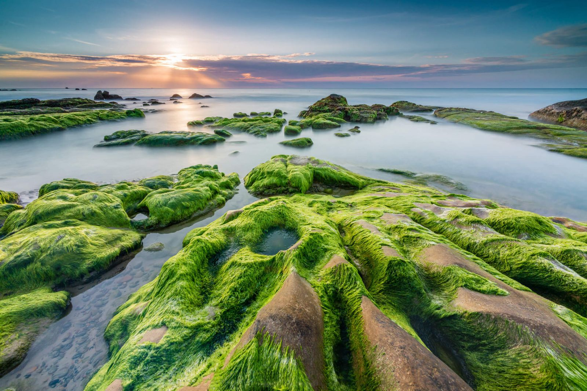
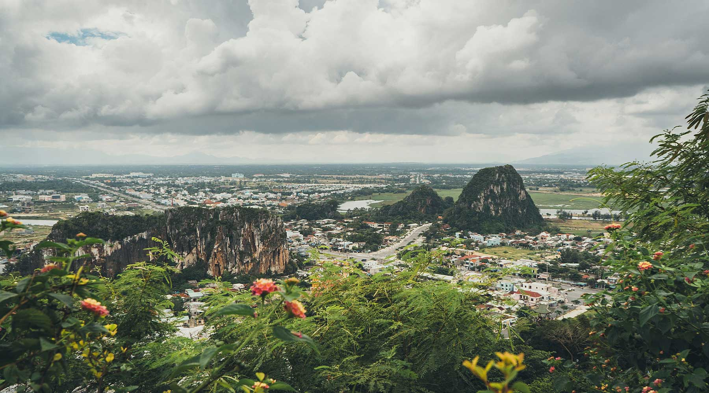

RẠN NAM Ô - Rạn Nam Ô nằm giữa một vùng biển trong xanh cùng các tảng đá lớn nhỏ mang hình thù khác nhau, tạo ra một không gian kỳ ảo rất đáng để đến chiêm ngưỡng một lần.
NGŨ HÀNH SƠN - Là một quần thể núi bao gồm 5 núi được đặt tên theo ngũ hành kim, mộc, thủy, hỏa, thổ. Truyền thuyết kể rằng xa xưa trên đất nước Champa có một con giao long (có sách chép rằng nữ thần Naga) đến đây sinh hạ. Trứng của giao long theo thời gian lớn dần nở ra một nàng thiếu nữ xinh đẹp. Vua Champa nghe vậy đã đến cưới nàng làm vợ. Còn những mảnh vỡ trứng tách ra đã trở thành 5 ngọn núi đá vôi tuyệt đẹp nhìn ra biển cả mênh mông.


BÃI BIỂN NON NƯỚC - Ôm trọn núi Ngũ Hành Sơn trong một bãi cát trắng dài, bãi biển non nước cũng là một nơi phải ghé qua cho các tín đồ sống ảo. Cát trắng, biển xanh, không gian xung quanh như thiên đường thu nhỏ. Chính vì vậy nơi đây từng được tạp chí Forbes bình chọn là 1 trong 6 bãi biển đẹp nhất hành tinh.